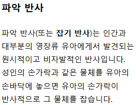

청진기 뺏겼을때 의사가 어떻게 반응하는지 보는거임?
의기 양양해 보이는 표정 ㅋㅋㅋㅋㅋㅋ
"좆밥쉐리 ㅋㅋ"

아기가 누군가의 손을 저렇게 잡으면 애착감이 확 들것 같애
영장류가 새끼 업고 다닐때 저 반사 반응이 없는 새끼는 털 안 잡고 있다가 다 떨어져 죽었음
아하
이해완료
파악이 grasp의 오역인 줄 알았는데 애초에 파악이라는 한자어 자체가 잡아 쥔다는 뜻이네. 한국어 영어 둘 다 손으로 쥔다는 걸 이해한다는 비유로 쓰는 게 신기하다.
헤라클레스가 뱀잡은게 이거구나
일리있구만
그저 좀 셌을뿐
아니내꺼라고 놓으라고시발
주세요 해봐 ㅋㅋ
의사양반 울지도 않고 씩씩하네
에잉... 어린 것이 벌써부터 손버릇이 고약하구먼
저것때문에 벙어리장갑 껴놓지 않으면 가끔 자기 머리카락 잡고뜯으면서 울음
머리는 아픈데 손을 못놔ㅜㅜ
??: 돌도 되기전에 청진기를 잡았다니깐요~?
운동 많이 된다.
")
")
뒤에 받쳐주던 손 슬쩍 치워서 깜짝 놀라게 하는 것도 있던데 그것도 저런 검사랑 비슷한건가
긔여웡